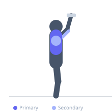

Exercise guide / Decline Dumbbell Squeeze Press
Decline Dumbbell Squeeze Press
A decline bench pressing variation where both dumbbells are pressed together throughout the entire movement, creating a constant adduction force that maximally activates the medial and sternal fibers of the pectoralis major. The decline angle combines with the continuous squeeze to target the lower chest with both pressing and adduction force simultaneously.
Primary muscles
pectoralis major sternal
Secondary muscles
triceps medial head
deltoid anterior
Stabilizers
pectoralis minor
Equipment
Dumbbell (Fixed)
Adjustable Bench (Incline / Decline)


Starting position
- Lie on a decline bench with feet secured. Hold two dumbbells pressed firmly together above the lower chest with palms facing each other. Arms extended.
Setup
- Set the bench to a 15–30 degree decline. Use hexagonal dumbbells as their flat sides make maintaining contact easier.
Steps
- Step 1: Begin with dumbbells pressed together above the lower chest, palms facing each other. Maintain active squeezing pressure throughout.
- Step 2: Lower the dumbbells as a single unit toward the lower chest, keeping them in constant contact.
- Step 3: Descend until the dumbbells are at chest level.
- Step 4: Press the unit back up to the starting position, squeezing the dumbbells together the entire time.
Coaching cues
- Squeeze the dumbbells together as hard as possible the entire set
- Press from the inside out — the squeeze generates the tension
Breathing
- Inhale on descent, exhale on the press back up.
Range of motion
- Full range from chest to full arm extension. The adduction force is maintained throughout.
Tempo
- 3-1-2-1 (3s descent, 1s pause, 2s press, 1s squeeze at top)
Common mistakes
- Letting the dumbbells separate during the movement — the squeeze must be continuous
- Using dumbbells too heavy to maintain the squeeze while pressing
- Excessively flaring the elbows
Safety
- Secure feet firmly on the decline to avoid sliding
- Get a spotter to hand you the dumbbells in position to avoid awkward setup
Training
- hypertrophy: 8–15 reps
- hypertrophy: 3–4 sets
- Rest: {'hypertrophy': 90}